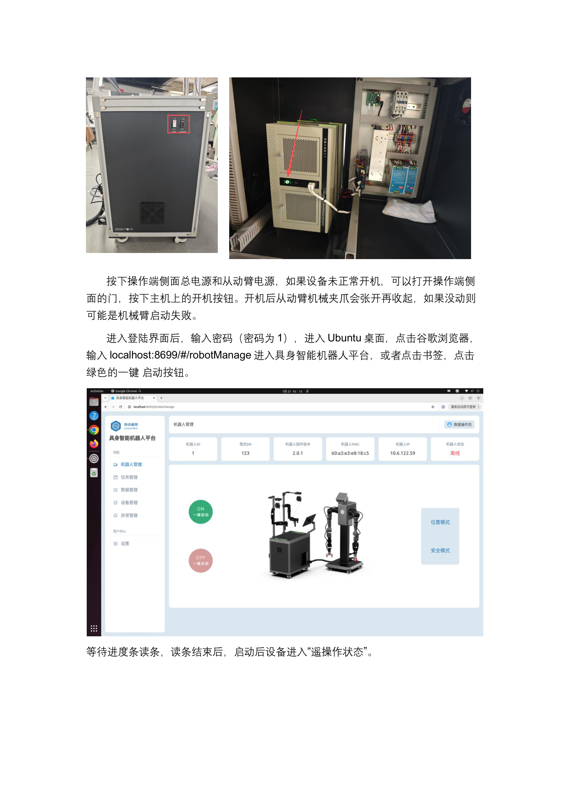
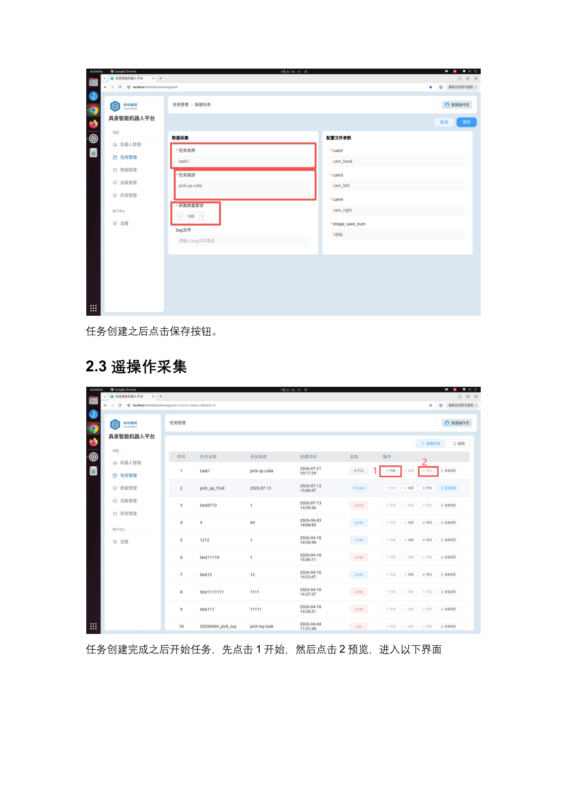
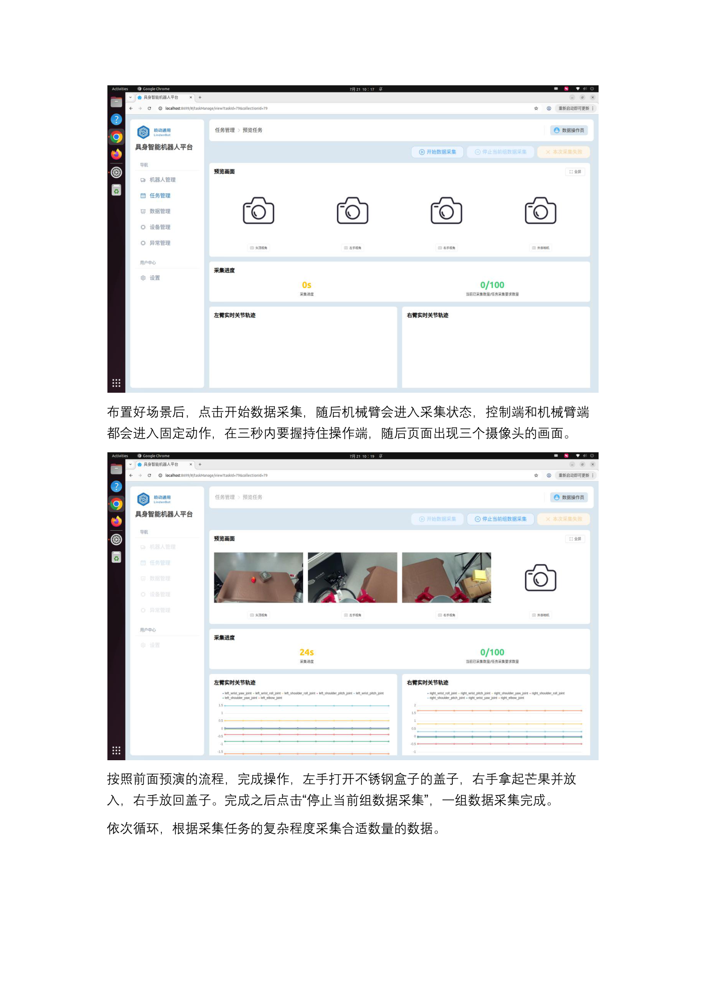

EXP-01 · 8 学时
成果演示与整体框架
先看真机自主分拣的成果演示，再拆解「采集 → 转换 → 训练 → 推理」四段流水线，建立对双臂分拣场景的全局认知。
01学习目标 · 先看成果
- 理解工厂双臂分拣任务：左手黑色零件入左格、右手银色零件入右格的分工约定。
- 记住四段流水线：数据采集 → 数据转换 → 模型训练 → 真机推理，各段输入输出清晰。
- 明白行为克隆的本质：机器人「看你示范、照着做」，数据质量比数量更重要。
- 能说出本课用到的硬件：LDT01-STD 一体机、主从同构双臂、三路采集相机与工控机。
建议先完整看一遍演示：接下来四个实验，就是把这段视频「拆开再拼回去」。
02原理：任务定义与行为克隆
分拣任务像教新手整理零件盒：「左手管黑色件放左格，右手管银色件放右格」。机器人并不理解「黑色」的含义，它只是把「看见的画面 + 当前关节状态」映射到「下一步关节动作」。我们把人的双臂示范录下来，让它反复模仿——这就是行为克隆（Behavior Cloning）：我做给你看，你照着学。
任务准则
抓 - 拿 - 放：左手对黑件、右手对银件，各归各格，动作连贯不交叉。
示范来源
操作者穿戴 LDT-01 遥操作端，主臂领动、从臂跟随，第一视角三路相机同步录像。
学习目标
ACT 策略学会「画面 + 16 维关节状态 → 下一帧动作」，部署回真机复现。
成败关键
桌面环境与采集时一致；数据保质保量，坏示范用「本次采集失败」按钮剔除。

生活化类比：行为克隆像「跟着大厨学切菜」——你只看大厨的手怎么动、食材在哪，不背菜谱公式；看得越多、切得越准，你越像大厨。若大厨示范里混入切到手的失误，你也会学会失误——所以坏数据必须剔除，数据质量 > 数据数量。
03硬件与材料
LDT01-STD 一体机
i5-13400F / RTX 4060 Ti 16GB / 64GB RAM / 2TB SSD，Ubuntu 22.04 + ROS2，采训推一体。
主从同构双臂
从动臂（跟随）7 轴谐波关节 DC48V、负载 5kg；主动臂（遥操作端）7 轴总线舵机；二指夹爪 0–90mm。
视觉相机
4 个 RGB 相机（3 用 1 备）：CAM-1 头部、CAM-2 左腕、CAM-3 右腕，92° DFOV 全局快门。
场景物料
黑色零件、银色零件、带左/右分格的收纳盒、平整工作桌面（环境需与采集时保持一致）。
采集套件还包括：LDT-01 遥操作端（主动臂 + 被动支撑 + 捏合式二指夹爪）、急停按钮、数据存储目录 /home/lindenbot/save_data。软件侧需提前装好 LeRobot 0.4.1 环境（EXP-03 展开）。
| 部件 | 关键参数（摘自 00-硬件参数） | 在本课中的角色 |
|---|---|---|
| 三路相机 | CAM-1 头部 / CAM-2 左腕 / CAM-3 右腕，92° DFOV、全局快门、最高 1600×1300@60fps | 提供第三视角 + 双手腕视角，构成策略输入图像 |
| 从动臂 ×2 | 7 轴谐波关节，DC48V，通信 500Hz，19bit 编码，负载 5kg，运动半径 850mm | 执行分拣的「真机双手」 |
| 主动臂 ×2 | 7 轴总线舵机，DC12V，100Hz，12bit，运动半径 554mm | 遥操作端，人类示范的「输入手」 |
| 二指夹爪 | 开口 0–90mm，夹持 2.5kg，50Hz | 抓取黑色/银色零件的执行末端 |
| 工控机 | i5-13400F + RTX 4060 Ti 16GB + 64GB RAM + 2TB SSD，Ubuntu 22.04 + ROS2 | 采集录制、数据转换、本地训练与推理全在这台跑 |
04操作步骤：四段流水线总览
S1数据采集
遥操作示范，三路视频 + 关节角同步入库
遥操作示范，三路视频 + 关节角同步入库
→
S2数据转换
CSV/HDF5 → LeRobot v3.0 Parquet + 视频
CSV/HDF5 → LeRobot v3.0 Parquet + 视频
→
S3模型训练
lerobot-train 驱动 ACT 学习示范
lerobot-train 驱动 ACT 学习示范
→
S4真机推理
ROS2 节点 50Hz 推理，双臂自主分拣
ROS2 节点 50Hz 推理，双臂自主分拣
- 部署与开机：摆好桌面场景 → 测量机械臂与桌面距离 → 一键启动上位机（localhost:8699）。
- 建任务与采集：新建任务（名称/描述用英文）→ 预览轨迹 → 点开始后 3 秒内握持操作端完成示范 → 停止当前组，循环往复。
- 标记坏数据：失误的组点「本次采集失败」，该组不计入训练。
- 转换与训练：convert 脚本切段转换 → lerobot-train 训练 ACT 策略（本地或云端均可）。
- 推理复现：加载 checkpoint，三终端启动 ROS2 推理，/model_ifrun 服务开关控制双臂自主分拣。


05关键命令（预览，后续实验展开）
以下命令摘自《聆动机器人案例-工厂场景》与 LeRobot 0.4.1 官方入口，本实验先混个脸熟：
# ① 数据转换：save_data 目录 → LeRobot v3.0 数据集（按 episode 区间） python convert_lerobot_v3_fixed_simple.py \ --input /home/lindenbot/save_data \ --output /home/lindenbot/converted_data \ --start 180 --end 209 --task "Parts Categorization" # ② 训练 ACT 策略（本地示例，完整参数见 EXP-03） lerobot-train \ --policy.type=act \ --dataset.repo_id=lindenbot/parts_categorization \ --dataset.root=/home/lindenbot/converted_data \ --batch_size=12 --steps=50000 --save_freq=4000 # ③ 真机推理：三终端启动后，用服务开关控制自主分拣 ros2 service call /model_ifrun std_srvs/srv/SetBool "{data: true}" # 开始 ros2 service call /model_ifrun std_srvs/srv/SetBool "{data: false}" # 停止
编号提醒：save_data 下的采集编号不从 0 开始，取「当前最大编号 = 最新一集」；切段时用
--start/--end 或 --skip 排除坏集。这三条命令分别属于 EXP-03（转换/训练）和 EXP-04（推理）的核心操作，本实验只要求「读得懂每段在干什么」：
转换在干什么
把散装采集记录（CSV 关节角 + 视频帧）按 episode 切齐，重排成训练框架统一的数据格式。
训练在干什么
让 ACT 网络反复看「当前画面 → 人的下一个动作」，把示范内化成权重/checkpoint。
推理在干什么
真机上加载 checkpoint，把每帧观测实时翻译成关节指令，服务开关随时接管/交还控制权。
一条主线
三条命令共享同一套数据：converted_data 既是训练的读取根目录，也是排查问题的唯一事实来源。
06动画：四段流水线
动画：数据包依次流过四段流水线，从人工示范变为真机自主动作，最终回到同一张桌面完成分拣。
观察为什么叫「流水线」而不叫「四步操作」？——每段的输出格式是下一段的输入契约：v3.0 数据集必须含 Parquet + 视频 + meta 三件套，训练与推理才认账。
07互动：分拣节拍计算器
拖动滑杆估算一轮「抓-拿-放」耗时与总采集时长
等待计算……
案例复盘建议：采集 150 次左右、训练步数足够（工厂场景文档建议 500000 步以上），桌面环境保持一致，分拣复现成功率才稳。轮数不是越多越好——含失误的轮次会被剔除，有效轮次才是硬指标。
08常见问题
Q 演示视频能正常播放吗？
源片为 HEVC/H.265 竖版 720×1280，Chrome/Edge（Win）自带解码一般可直接播；若黑屏请换 Edge 或本地播放器打开同目录 mp4。
Q 上位机打不开？
先确认一体机一键启动完成、进度条 100%，浏览器访问 localhost:8699；默认密码 1。
Q 左右手会「串」吗？
采集时就固定分工：左手黑件左格、右手银件右格，不交叉；训练数据才有一致的映射规律。
Q 四段顺序能跳吗？
不能。没有合格的采集就没有可转换的数据，没有 v3.0 数据集训练会直接报错，推理也无 checkpoint 可加载。
09拓展阅读
- 《00-聆动机器人硬件参数介绍》：4 相机布局、主从臂负载/半径参数表、行业课程对标（序号 1 即物料分拣场景）。
- 《聆动机器人案例-家庭场景》：同一套四段流水线换个任务（水果入盒）照样跑通，体会「场景变、框架不变」。
- LeRobot 官方 ACT 论文：Action Chunking with Transformers——一次输出 100 步动作块（chunk_size=100），动作更平滑。
- command/8_train_dual_arm.sh 与 9_inference_dual_arm.sh：真实工程脚本里如何组织双臂训练与推理入口。
- 《遥操作设备 LDT-01 软件使用流程（开发者版）》：LED 四色状态、拖拽模式、插补检查等设备侧细节，EXP-02 详解。
10思考题 · 自测
✅ 完成成果
看完演示视频，能默画出四段流水线并说出每段的输入/输出产物。
🧠 原理收获
用自己的话解释行为克隆，以及「数据质量 > 数据数量」在本任务中的具体含义。
🛠 技能收获
认识 localhost:8699 上位机、任务创建/预览/采集/停止的完整入口与视频演示对照。
📐 评分速览
动画观察 30% + 互动计算 30% + 思考题作答 40%。
思考 1若采集时收纳盒位置每次都被挪动，训练出的模型可能学会什么「歪本事」？这说明示范数据的哪类变量必须受控？
思考 2行为克隆只模仿动作，不懂物理。请举一个本场景中「照猫画虎但会翻车」的风险点（提示：零件叠放、夹爪打滑），并说明可用什么手段缓解。